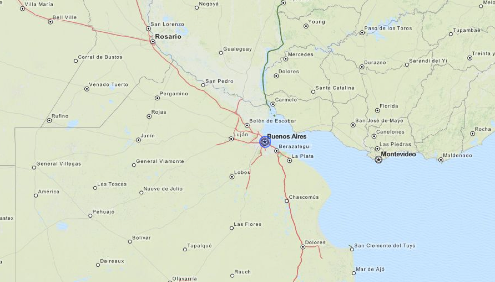

Por Gabriela Rodríguez / @gaba
Knight-Mozilla Open News Fellow at La Nacion, Argentina
Presentación en http://gabelula.github.io/mapas/
Los mapas consisten de datos geograficos y un sistema para representarlos visualmente.
Latitudes van de -90 (polo sur) a 90 (polo norte), con 0 en el ecuador.
Longitudes van de -180 (la mitad del camino yendo del primer meridiano al oeste) a 180 (la mitad del camino yendo del primer meridiano al este)
Buenos Aires está en -34.6158527,-58.4332985
Cualquier espacio geografico se puede expresar como una secuencia de pares latitud/longitud.
un punto en el mapa es un sólo par latitud/longitud

Es un par de puntos latitud/longitud, uno para el inicio y otro para el final.
aveces llamada polyline, es una lista de lineas rectas en orden (una lista de pares de puntos latitud/longitud).
llamada polygono, es un tipo especia de polyline que termina donde empezo.
Una feature puede ser cualquier cosa que exista en un lugar fisico fijo (una casa, un pais, ciudad, calle, semaforo, lago, etc). Una feature tiene geometria y propiedades.
un archivo de datos geograficos es una lista de features, y cada feature es una lista de piezas geometricas, y cada pieza geometrica es una lista de latitud/longitud
``` Feature #1: geometry: polygon #1: [list of lat/lngs] polygon #2: [list of lat/lngs] (for Easter Island) ... properties: name: Chile capital: Santiago ... Feature #2: geometry: polygon #1: [list of lat/lngs] polygon #2: [list of lat/lngs] ... properties: name: Argentina capital: Buenos Aires ... ```
Un "shapefile" es un conjunto de archivos:
Es un buen formato para manipulación e inspección de datos de mapas. No es muy bueno para hacer mapas en la web pero hay herramientas para convertirlos a otros formatos.
JSON es un formato ligero para intercambio de datos en la web. GeoJSON es el mismo formato para mapas en la web. También es entendible por humanos y se puede abrir y editar en cualquier editor de textos.
http://www.naturalearthdata.com/
Tiene descargas de diferentes conjuntos de datos para toda la Tierra: Culturales (fronteras de paises, provincias, calles, rutas, ciudades, aeropuertos, parques, etc) y Fisicos (costas, islaes, rios, lagos, etc).
http://www.indec.gov.ar/codgeo.asp
Tiene descargas de todo el pais, provincias, departamentos y puntos de localidades en formato shapefile. Hay que registrarse (gratuito y sólo un correo de confirmación) para poder descargar archivos.
Conjuntos de geodatos generados por usuarios, fáciles de buscar, navegar y pre-visualizar.
http://commons.wikimedia.org/wiki/Category:Maps
Muchos mapas en formato SVG, que puede ser modificado para la web.
La mejor base de datos de fronteras, rutas y lugares para toda la Tierra. Esta disponible en un formato especial XML y tiene que ser convertido para que pueda ser utilizado por la mayoria del software disponible.
http://www.buenosaires.gob.ar/
Archivos en formato shapefile de comunas, vias de tren, autopistas,barrios, calles, etc de la provincia de Buenos Aires.
http://www.ec.gba.gov.ar/estadistica/censo2010/cartografia.html
Para descargar en formato shapefile los conjuntos de datos que fueron utilizados en el Censo Nacional de Población, Hogares y Viviendas 2010 en la provincia de Buenos Aires.
Puede convertir entre varios formatos, entre ellos shapefile y GeoJSON.
Muy bueno para trabajar con archivos de formato shapefiles. Muy sencillo para visualizar rapidamente conjuntos de datos.Es gratuito y muy potente.
Para usar datos geograficos para hacer uno de estos mapas deslizantes, necesitamos en realidad hacer dos mapas:
Una de las librerias para hacer estos mapas es Leaflet. Tienes que escribir un poco de JavaScript: http://leafletjs.com/
Asi se dibuja Uruguay en Leaflet: map.addLayer(new L.polygon([ [-30.21629485445426, -57.62513342958296], [-30.109686374636127, -56.976025763564735,], [-30.883075860316303, -55.97324459494094], [-30.853878676071393, -55.601510179249345], [-31.494511407193748, -54.57245154480512], [-32.047242526987624, -53.78795162618219], [-32.727666110974724, -53.209588995971544], [-33.20200408298183, -53.6505439927181], [-33.768377780900764, -53.373661668498244], [-34.39681487400223, -53.806425950726535], [-34.952646579733624, -54.93586605489773], [-34.75265878676407, -55.67408972840329], [-34.85983570733742, -56.21529700379607], [-34.430456231424245, -57.1396850246331], [-34.4625472958775, -57.81786068381551], [-33.909454441057576, -58.42707414410439], [-33.26318897881541, -58.349611172098875], [-33.040566908502015, -58.13264767112145], [-32.044503676076154, -58.14244035504076], [-31.016556084926208, -57.87493730328188], [-30.21629485445426, -57.62513342958296] ]));
Uruguay dibujado con Leaflet
El metodo más popular es usar una liberria de JavaScript llamada d3: http://d3js.org/. Otra opción es usar Kartograph.js: http://kartograph.org/
Agradecimientos: Andy Tow (por enlaces a conjuntos de datos en Argentina) y Noah Veltman(por sus notas en mapas para periodistas), Brian Jacobs (por la inspiración).
Presentación en http://gabelula.github.io/mapas/